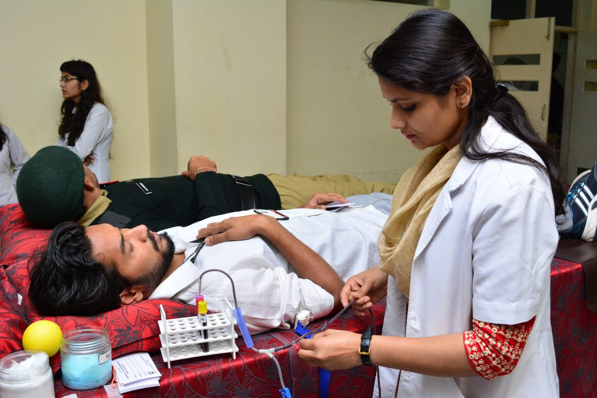
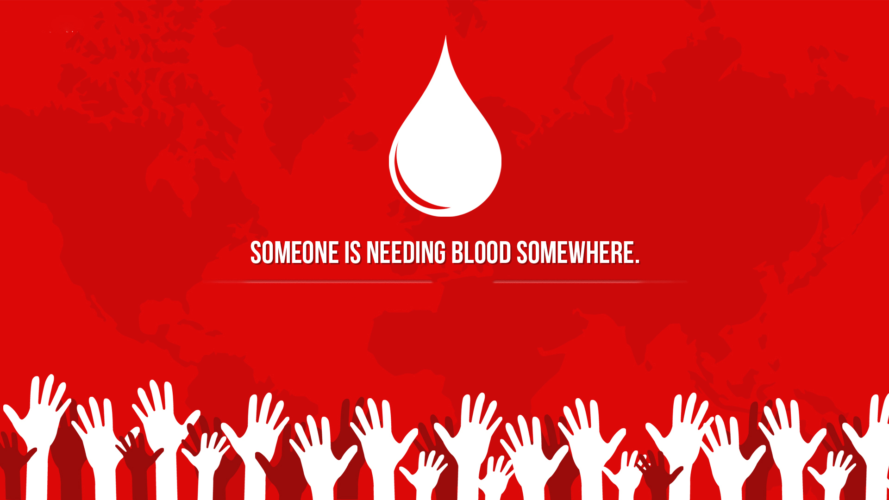

As a donor, it is your responsibility to ensure the quality of blood you're donating.
You must be above 18 years of age. You should not be underweight.
"Usually donors weighing more than 45-50kg are acceptable,
" says Dr Byotra. You should not be suffering from any infectious (such as a cold or flu) or chronic diseases (such as diabetes).
You should not have taken any intoxicating drugs, orally or otherwise, within 48 hours prior to donating blood.
You should not have high blood pressure.
You should not be pregnant or menstruating.
2.Facts
How Donating Helps
Every 2 seconds, someone in the India needs blood. Donating blood can help:
People who go through disasters or emergency situations
People who lose blood during major surgeries
People who have lost blood because of a gastrointestinal bleed
Women who have serious complications during pregnancy or childbirth
People with cancer or severe anemia sometimes caused by thalassemia or sickle cell disease
Want to donate now ?
The Four Steps of Blood Donation
The blood donation process can be broken down into four steps:
1. Registration
2. Medical history and mini-physical
3. Donation
4. Refreshents
While the whole process, from the time you get to the facility to the time you leave,
can take about an hour, the actual donation itself may take as little as 8-10 minutes.

Steps for Registration

Become A Donor:
(New Member)
(Existing Member)
Rise your hand and help those who need you.
Become someone's Hero.
SHARE A LITTLE CARE A LITTLE
Mission ::
To make the best use of contemporary technologies in delivering a promising web
portal to bring together all the blood donors in India; thereby fulfilling every
blood request in the country. To provide a common platform for those who have a
zeal to support education of the under resourced yet meritorious students